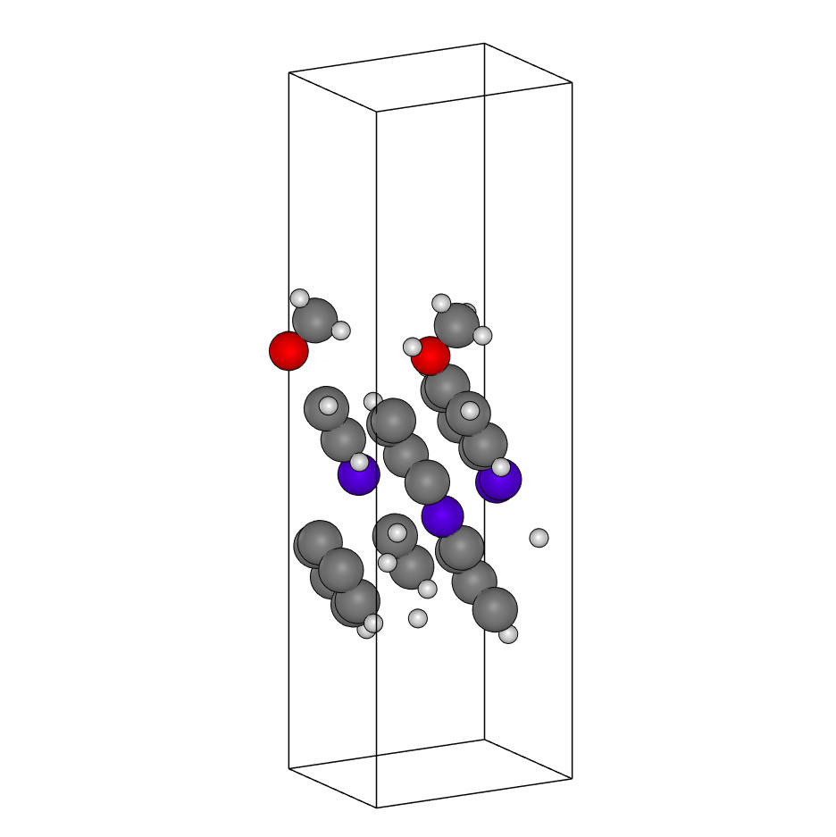

Analyzing a dataset¶
This tutorial introduces the basic functionality of the package when applied to a real-world analysis of a dataset containing atomic structures.
Lets start by loading a series of geometries as ASE.Atoms objects. In this case we have used a list of extended xyz-files to represent our dataset. But in general as long as the atomic positions, unit cell, periodic boundary conditions and chemical symbols for the atoms are available, any dataset can be turned into an ASE.Atoms object and analyzed by MatID.
So let’s start by loading a series of structures into a list:
import os
import json
import ase.io
from matid import Classifier
from matid import SymmetryAnalyzer
from matid.classifications import Class3D, Material2D, Surface
# This is a folder containing 10 different extended XYZ files.
inpath = "./structures"
# Lets find all XYZ files and read the geometries as ASE.Atoms objects in to a
# list
geometries = []
for root, dirs, files in os.walk(inpath):
for i_file in files:
# if i_file.endswith("C96Si96+C54H16.xyz"):
if i_file.endswith("xyz"):
i_atoms = ase.io.read("{}/{}".format(root, i_file))
# view(i_atoms)
geometries.append((i_file, i_atoms))
With a list of geometries available, we can start analyzing them with MatID. Typically the first task is to get a generic classification for the structure. This is done with the Classifier-class:
# Create a Classifier instance. The default settings are used here
classifier = Classifier()
# Get a classification result for each geometry
classifications = []
for i_file, i_geom in geometries:
print("Classifying")
i_cls = classifier.classify(i_geom)
print("Done")
classifications.append(i_cls)
Once we have determined the structural class of each geometry, we can further query for additional information that depends on the detected classification, and create a summary of the results:
# Create a summary of the geometries
summary = {}
for (i_file, i_geom), i_cls in zip(geometries, classifications):
i_type = type(i_cls)
i_atoms = i_cls.atoms
i_data = {
"system_type": str(i_cls),
}
# Get symmetry information
blk_cell = None
if i_type == Class3D:
blk_cell = i_atoms
elif i_type == Surface:
blk_cell = i_cls.prototype_cell
if blk_cell is not None:
symm_analyzer = SymmetryAnalyzer(blk_cell)
formula = i_atoms.get_chemical_formula()
crystal_system = symm_analyzer.get_crystal_system()
bravais_lattice = symm_analyzer.get_bravais_lattice()
space_group = symm_analyzer.get_space_group_number()
i_data["space_group_number"] = space_group
i_data["crystal_system"] = crystal_system
i_data["bravais_lattice"] = bravais_lattice
# Get the outlier information from two-dimensional systems
if i_type == Surface or i_type == Material2D:
outlier_indices = i_cls.outliers
outlier_formula = i_atoms[outlier_indices].get_chemical_formula()
i_data["outlier_indices"] = outlier_indices.tolist()
i_data["outlier_formula"] = outlier_formula
summary[i_file] = i_data
# Write a summary of the results
with open("summary.json", "w") as fout:
fout.write(json.dumps(summary, indent=2, sort_keys=True))
You can find the full example in “examples/summary.py”. Here are the results:
Filename
Results
Image
C32Mo32+CO2.xyz
system_type: Surface
outlier_formula: CO2
outlier_indices: [64, 65, 66]
space_group_number: 225
crystal_system: cubic
bravais_lattice: cF
C49+N.xyz
system_type: Material2D
outlier_formula: N
outlier_indices: [49]

H2O.xyz
system_type: Class0D

Si8.xyz
system_type: Class3D
space_group_number: 227
crystal_system: cubic
bravais_lattice: cF

Mg61O62+CH4Ni.xyz
system_type: Surface
outlier_formula: CH4Ni
outlier_indices: [72, 124, 125,126, 127, 128]
space_group_number: 225
crystal_system: cubic
bravais_lattice: cF
C26H24N4O2.xyz
system_type: Class2D
Ru.xyz
system_type: Atom